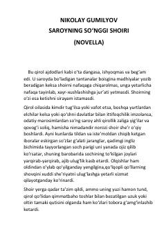

SSSaroy shoirining hayoti va ijodiy uyg'onishi haqidagi ta'sirli novella.
Ushbu asar saroyda xizmat qiluvchi keksa va ma'yus shoirning hayoti hamda ijodiy o'zgarishi haqida hikoya qiladi. Qirol saroyidagi zerikarli muhitda yashayotgan shoir, kutilmaganda o'z uslubini tubdan o'zgartirib, saroy ahliga kutilmagan darajada kuchli va yangicha she'rlar taqdim etadi.